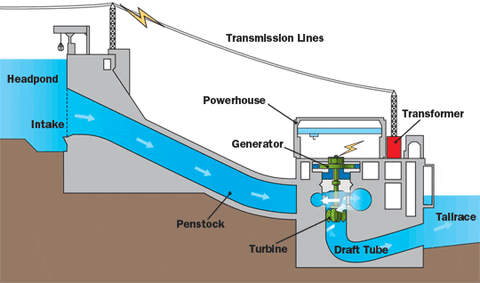

е обновлив извор на енергија која се добива од кинетичката енергија на вода во движење. Оваа форма на енергија се користи преку инсталации попознати како хидроцентрали. Хидроцентралите функционираат така што го искористуваат потенцијалното паѓање на водата, што го предизвикува движењето и генерира електрична енергија. Хидроенергијата е еколошки прифатлив извор на енергија, бидејќи не предизвикува загадување со емисија на штетни гасови. Освен тоа, нејзиниот капацитет за производство на електрична енергија зависи од количеството вода и брзината на реката или потокот.
